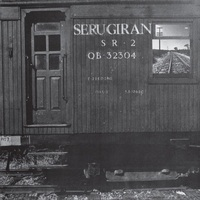
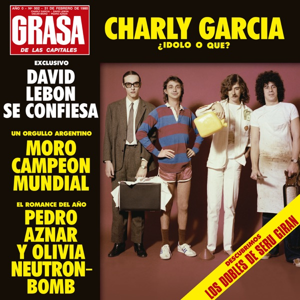
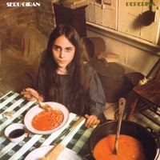

Charly con Serú Girán
Sobre Serú Girán
Compuesta por Charly García, Pedro Aznar, David Lebón y Oscar Moro, Serú Girán fue una banda de rock argentina. Es considerada una de las agrupaciones más importantes de la historia del rock en español y reconocida por sus comentarios tanto sociales como políticos en sus letras.
Estuvo activo entre 1978 y 1982, tuvo varias reuniones con presentaciones en vivo entre 1991 y 1998.
La calidad musical de cada uno de los integrantes, siendo todos referentes en su instrumento, dotan a la reconocida banda de un sonido único. Muchas veces llamados "los Beatles argentinos", Serú tomó elementos del sonido clásico del rock y le añadió una vuelta de tuerca revolucionaria que hizo que la calidad musical del grupo sea mucho más que la suma de sus partes.
Discografía
-

Serú Girán (1978)
El álbum de estudio cuenta con las canciones «Serú Girán», «Seminare» y «Eiti-Leda», que se convirtieron en clásicos del rock argentino. Representó un punto de inflexión para el género en el país, dada la complejidad de las composiciones, y por la exploración con diversidad de ritmos y estilos musicales, como el rock progresivo y el jazz fusión, así como el uso poco habitual de sintentizadores y sinfonías orquestales.
-

La Grasa de las Capitales (1979)
Para este álbum de estudio, el grupo musical eligió una propuesta mucho más frontal. Eliminaron la orquesta, que no había sido totalmente aceptada por el público, y compusieron canciones más simples y directas. La portada de este disco es una parodia de la revista Gente.
La canción que da el título al álbum es la más comprometida de todo el disco y exhibe una crítica abierta y sin eufemismos a los aspectos más deplorables y decadentes de las grandes ciudades y sus agentes contaminantes.
-
Bicicleta (1980)
Bicicleta es considerado como el mejor disco de Serú Girán, o por lo menos uno de los más populares y reconocidos. Es un disco sólido y con incursiones en el rock progresivo, apareciendo muy interesantes pasajes instrumentales, sin despegarse del lado convencional. Las composiciones y la interpretación vocal nuevamente se las reparten Charly García y David Lebón.
-

Peperina (1981)
El disco presenta adelantos notables en cuanto a la calidad de grabación y contiene clásicos como "Peperina", "Salir de la Melancolía y "Cinema Verité". Está compuesto mayormente por canciones descartadas de "Bicicleta", luego de haber descartado la idea de hacer un álbum doble.
Poco tiempo después del lanzamiento Pedro Aznar se trasladó a Estados Unidos; luego de un par de semanas Serú Girán se disolvió.
-
Serú '92 (1992)
Diez años después el grupo se reunió para publicar su quinto y último álbum de estudio, convirtiéndose en un éxito comercial. El álbum tiene elementos progresivos de rock y pop, mostrando el estilo característicos de la banda. Serú '92 terminó de afianzarlos como una de las agrupaciones más influyentes de la historia del rock argentino.